If the 2D view windows are black then reset all camera views from the menu bar at the top of the editor. This should fix things up nicely.
In this (and all of my other) tutorials, I will refer to the icons and other parts of UnrealEd by the names in the Tool Bar Reference. Familiarize yourself with this interface.
You can customize the look of your editor by changing the position of certain windows, etc... but I will always assume they are in the default position when referring to a location.
After you have completed the basic tutorials, feel free to customize UnrealEd as you see fit, but for this tutorial it will be much easier to follow along if you are using the default positions.
Take some time to study the interface. Check out the Browser and right-click the Tool Bar Icons to get familiar with their names.
 |
The Tool Bar will probably the menu you use the most. It contains all the icons you need to start editing with UnrealEd. Click the picture for a detailed reference to each button and it's function. |
At the bottom of the Browser is a set of buttons that change with each Mode. They should be self explanatory, but I will refer to them as necessary. There is a lot more on the Texture Browser later on in this tutorial.
This is the Browser in all four modes Mode:


 |
All the brushes in UnrealEd are color-coded for your convenience, making it easy to tell from any view what type of brush it is. Selecting a brush will highlight it a brighter shade of the same basic color. |
 |
This is a 2D view without the menu bar. To open the Menu bar press the green arrow. |
| 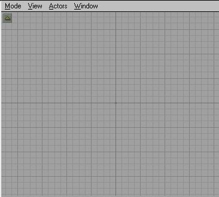 | This is the 2D view with the menu bar open. |
 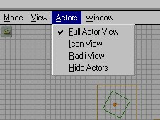
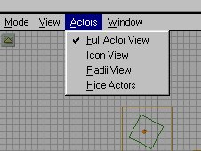| 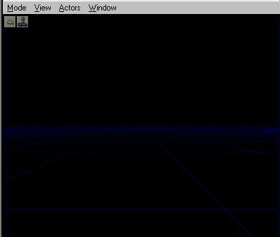 | This is 3D view. The green arrow in the upper left corner (under the menu bar) will open and close the menu bar, just like in the 2D views. The joystick icon next to that will update the 3D view in real-time*. When this is selected, ambient sounds are played, dynamic lights are displayed, textures are animated, and invisible brushes will be shown. |
 |
The Dynamic Lighting Mode will show lighting as you will see it in the game. |
 |
The Texture Mode will show you all the textures unlit (full bright) and not show any lighting effects. A nice feature if you are aligning or changing textures in areas you have already lighted and rebuilt. |
 |
The polygon (or poly for short) view will show all your brushes as colored geometric shapes. |
| 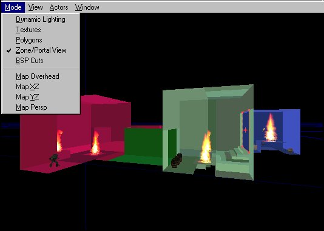 | This view will show all your zones as different colors. This will help determine if you have an area zoned (or sealed) correctly. Great for finding problems with zones. |
 |
The BSP view will show you how the engine "cuts up" the polygons for rendering. If you run into a BSP error (or hole, or HOM)* you can usually find the source with this view. It also helps you determine the speed of a particular area. the fewer the cuts, the faster the rendering. |

 |
Always use grid snapping. This will help align your brushes and prevent BSP errors. The default is 16 units and is usually sufficient. You can resize the grid scaling by right-clicking in any 2D window and selecting Grid. You can select a smaller grid setting (such as 8 or even 4) for adding smaller, detail brushes. |
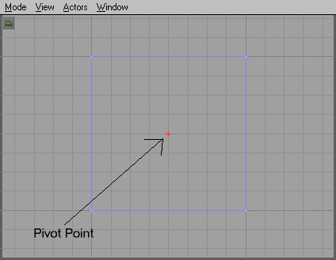  | Brushes are "snapped" to the grid using the pivot point, shown in the editor as a red cross on a particular point. The default location is the center point. You can change this point by left-clicking to highlighting the brush and then right clicking on the point you want to make the pivot point.>

Okay, lets make something! Your first room couldn't be easier. First let's see that Red Brush I mentioned. Simply left-click the Cube Tool. You should now see a red cube appear in all 4 views. As explained above, you can turn on the real-time updating now so you can see your movements in all windows. Remember, you can press the joystick icon by the green arrow, or click in a window and press the "P" key to do this.
Note: Any brush visible in the 3D view (except the red brush) will not show movement or even deletion until you rebuild.
Okay, we set the real-time updating in all windows and we still have this red cube. Wow, you say. In the Browser, select the Texture mode. Now we need to load a texture set. At the bottom press the Load button. A windows interface now opens and lists various files with UTX extensions. these are your texture packages. Each one is a set of textures. For now just load Ancient.utx. you can browse through the others later.
A bunch of new textures should now appear in the browser window. These are the textures in the file we just loaded. If you notice under the browser mode there are two pull-down menus. Both currently say all. The first one is to chose a loaded texture set. If you press the down arrow on the right you will see a list of loaded textures. Most are default engine sets, except Ancient, which we just loaded. Make sure Ancient is selected now.
 |
You can press the These buttons The next pull down menu is for the subdivisions within the texture set. This is just a way of grouping the textures in a set by type.   You can press the down arrow on he right of the set and see all the divisions. They should be pretty self-explanatory. For now, select All. You can do this by pressing this button Pick a texture by left-clicking it in the browser window. It should now be highlighted with a green border (like the one to the left). This is the currently selected texture and will be used until you change it. |
Having selected a texture, now press the Subtract button and you should now have a cube with the texture you selected. To change any texture left-click it in the 3D window. This will highlight it. Now if you select another texture it will replace the current one. Try changing the floor texture. Okay, we have a basic cube but it's not a level yet. First, we need to add light to it. But before we do that let's Rebuild.
Rebuilding GeometryPress F8 to open the Rebuild window. This window looks complicated but you don't need to concern yourself with most of it. Rebuilding sets everything up and renders the dynamic lighting for your level. You have to Rebuild to see the results of dynamic lighting on the textures and to see the results after deleting a brush. When you first add rooms they are rendered unlit (full bright) and lighting won't affect them until you rebuild. For more info on the Rebuilder click the image.

Press Rebuild Geometry now to rebuild the level. Just use the default settings and everything is automatic. It only takes a few seconds. Wow...everything went dark in the 3D view! That's because we have no lights.
First, to see where you are in the 3D window, press Mode to get a drop down menu. Now select Texture. This will show you the Texture mode, and not use lighting. Right-click the center of the ceiling in our room and select Add Light Here.
Note: The "Add Light" feature is always on the menu no matter what you have selected in the Browser.
You should now have a little torch icon in all windows. This is your light. Change the mode back to Dynamic Lighting in the 3D view.
Press F8 and rebuild. Close the Rebuild window. Ah...lighting.
But this light is a little too close to the ceiling. Let's move it down some.
Selecting and Moving Objects
To move an object in UnrealED left click it any view. This will highlight it as the selected actor. Whenever you select an actor you can right-click to get a pop-up menu. You can access the actors Properties from here (more on that later). To move it down in the 2D views (except, of course the top view) left-click it to highlight it and then hold Shift and the Left Mouse Button. Move the mouse up and down and the actor moves with it. You can use this method in any of the views to move objects. Try moving the light around a little in each view to see how it works. In the 3D view the object moves with your view. So you have to highlight the actor and then move your view and the object moves with it. Now highlight the light, and move it down to the center of the cube.
Tips: If you hold CTRL instead of Shift the object will more the same way, except your view will not move with it.
Always left-click and object to select it. If you have an object selected and then right click another object it will select them both (a potentially hazardous situation if you are moving, deleting or changing an objects properties.
 
|
You can see how many objects are selected by right-clicking a selected object to open the pop-up menu and checking the first line. It tells you what kind of actor is selected and how many. See the image below. If multiple actors of different types are selected it will look like the second image. |
 |
This is the light actor when it's not highlighted and when it is highlighted. Note the greenish tint when it is highlighted? That is your indicator that it is highlighted. Most every actor will have this greenish tint when it is highlighted. |
Rebuild your world. Now we need to save this level. Call it something original like TEST1 or something. Either choose Save Level from the Menu Bar or press CTRL-L. Name and save the level. Now press CTRL-P or choose Play Level from the Menu Bar. The log window will start scrolling and when it's done Unreal will open in your level. Now you should be in a small, ugly little room with a mysterious light source. That's what we just built! Bet we can do better.
There's nothing to do here so quit the game and return to the editor. As you know from the little play-test we did, this was no fun. So let's add some more to this level. First off, it would be nice if the light were actually coming from somewhere. Let's make a Torch! There is a handy little torch flame included with the game. You should still have classes in the browser. Click the plus sign by navigation point to close it, and then expand Light. Find TorchFlame and highlight it, but don't add it yet. First we need something for the torch to sit on. Right-click the red brush to highlight it. From the properties menu select RESET and Reset All Positioning. This is in case we rotated it or anything. The brush should move back to center (if you moved it). Now we need to change its size to something smaller than the room! Right-click the Cube Icon on the Tool Bar and open Cube Properties:
 |
Height width and breath are the three dimensions of the brush and should be self-explanatory. Don't worry about wall thickness as that only applies to hollow brushes and we will only be working with solids for now. Let's make this brush 64 units tall and make it 128 wide x 128 breadth. Make sure it is touching the floor, and touching one wall like below. |


| 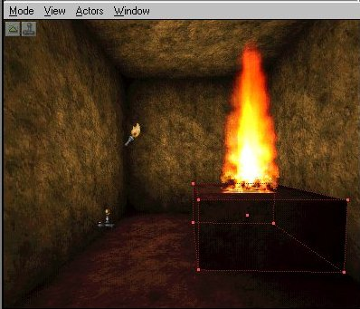 | Now click the Add brush to world button and you have a block for the torch to sit on. If your new brush overlaps the PlayerStart icon then move the PlayerStart the same way we moved the light before. Now right-click the top of the new brush near the center and select Add TorchFlame here. A big torch should now appear in your map. Using the 2D windows, center the torch on the block. Also, move the light we added previously closer to the PlayerStart. Rebuild again and you should have something like the image to the left. Tip: You always start a room by subtracting the main room and then using Add we add details and other objects to the room. |
When we added the PlayerStart and the TorchFlame you got your first taste of adding actors to the world. You will use this method to add most all actors to the world. Let's add some decorations to the room to get some practice adding actors. Make sure the Browser is on Classes. Now expand Decoration (press the minus sign). Expanding this will give you a long list of items. These are all in-game decorations. If you have been playing Unreal SP then you will recognize most of them. Keeping with our ancient theme of this map lets add a couple pottery jars to this room. Expand Vase and you should see pottery 0,1 and 2. Add one of each to the floor in front of the TorchFlame holder we built, like this:
 |
Notice in the 2D views that the actual meshes of the decorations are drawn. This gives you a great idea of it's actual in-game position and it's size. Rebuild and test your level. You may have noticed you can shoot these pots and destroy them. In a minute I will show you how to place objects inside these vases so you can get goodies when you shoot them. |
Okay, when we start this level our player is staring at the wall. That's okay, but it would be better to see something when we start. Lets turn him around so he is looking at the torch when we start. To rotate an object in UnrealEd left-click it in the overhead view to highlight it. See that red arrow coming off the icon? That is the direction it will be facing in the game. Now press the Rotate Icon. Still in the overhead view hold CTRL and press the right mouse. When you move your mouse back and forth you will see the object rotate and the red arrow tells you which direction it is facing. If you hold CTRL and the Left mouse button it will rotate on the Z axis (up and down).
 |
This is the PlayerStart icon's direction arrow. Rotate the PlayerStart around and look in the 2D views to see which way it facing. Now I will show you how to set it back. While it's still highlighted, right-click it and from the menu choose Reset and then Reset rotation. The arrow should be pointing back at the wall again. Okay, rotate the PlayerStart so he is facing the torch flame.
Tip: You can rotate actors without pressing the Rotate Icon. Simply hold CTRL and right-mouse in a 2D view will rotate the object. |
| 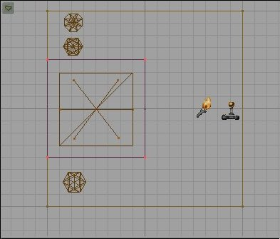 | Let's reposition the player start a little. Click back on the camera view icon (1st icon in the 1st column). Now click the PlayerStart in the overhead view and hold Shift and left mouse button. Move the PlayerStart back against the wall. Now do the same thing with the pottery decorations and move them. I placed mine beside the torch holder like below. Rebuild and play-test the level. |
Okay, this level is still pretty boring. Lets add some more rooms and stuff to spice it up a bit. First thing to do is make sure nothing is highlighted (click the Select None Icon on the Tool Bar). Now from the Menu Bar under Brush select Reset and Reset All. This will reset our red brush back to the starting position and reset its rotation and scaling. Now lets build a bigger room next to this one. Right-click the Cube icon and let's size this one a bit bigger than the first. Make it 512 x 512 x 512. In the overhead view move the red brush so it is next to (and touching) the first room.


Now press the Subtract button. In the 3D view you should now have a big room next to the first one. Let's retexture this room. Click any wall in the room to highlight the texture.

Highlighted Texture
We are going to retexture the whole room so select all the textures in this room. The fast way to do this is to press Shift-B to select the whole brush. With one wall highlighted press CTRL-B and now the whole room should be highlighted. Now in the Browser change it to Textures. Choose the Ancient Textures, and then choose Wall. Click one of the wall textures in the Browser and now are new room should be re-textured. We don't really want the floor and ceiling the same as the walls, so lets change them. Click on the floor in the 3D view to highlight it. Now if you press CTRL and left-click any other surface it will add that surface to your selection. Remember: hold CTRL while selecting surfaces to select multiple surfaces. So with the floor selected hold CTRL and select the ceiling. Now only the floor and ceiling should be highlighted. In the Browser select the Floor textures the same way we selected Walls. Pick a texture you like and click it to change the floor and ceiling to this texture.
There are a couple ways to duplicate a brush. For this exercise we are going to learn to Copy a brush, or more exactly, to copy the brush to the red brush and then adding it somewhere else.
Now we need a light source in the new room and to stay with our theme we are going to make another torch holder like the first. Click on the first torch holder we made to highlight it. Now right click and on the pop-up menu choose Copy Polygons, and To Brush. This will move the red brush to the torch holder and make it an exact copy. Now where ever we place the red brush and press add it will make a duplicate of the torch holder. Before you move it, click the Select None Button or simply click in any window so that the brush we copied from is not highlighted. Now in the overhead view, move the red brush into the new room we made. In the X-Z or Y-Z 2D views move the brush down so it is touching the floor. You will notice now that new room floor is much lower than the first room. That is okay, we will make stairs in a few minutes!
 |
Okay, with the red brush positioned where you want the new torch holder press the Add icon. Now move the red brush to the opposite wall and add another. You should end up like this: |
  |
Now we need more torches on those holders. You can go to the browser, select Classes, expand Light and then highlight TorchFlame again. Right-click where you want them and add them like we did the first time. Or, you can use this shortcut: Click the first TorchFlame we added to highlight it. Now press CTRL-W. This will make a duplicate TorchFlame, just slightly off-set from the first. By holding Shift and Left mouse button we can move this TorchFlame to the new location. In the overhead view move the new torchflame over the holder in the new room. In one of the side views (x-z or y-z) move it down to the top of the holder. When the first one is positioned, duplicate it again and move it over the next torch holder. You should now have something like this: Rebuild and play the level if you wish. I know, There is no way back to the first room! We need to make some stairs to get back to the first room so lets do that. |
As always, start by resetting the red brush. Now click on the stair Icon in the tool bar. The red brush should now look like a set of stairs. We need to move it to position so hold shift and in the overhead view move it into the new room so it is touching the wall between the two, and center it.
In the side views you will notice the stairs are up in the air. Move them down to the floor of the second room. Check all the views to make sure the stairs are just where you want them. Once they are, simply click add and you have stairs!


Let's add some more decorations to make sure we know how. In the Browser select Classes and expand Decoration. The first one is a barrel so lets add some barrel is this room. Highlight barrel and right-click in the 3D view where you want the first one and select Add Barrel here. Add two or three of them. Position them against the wall. Now let's learn how to add goodies to them. Left-click on a barrel to highlight it, then right-click to get the pop-up menu and choose barrel Properties. A new dialog window has opened. Take a minute to familiarize yourself with the properties window. Click the image to learn more about the Properties Menu.

All actors will have the same basic Properties window. There are several things we can set here but a lot more that will have no affect on this actor. The sheer number of fields of in the Properties Menu seems daunting. The truth is you only be concerned with a few fields at a time and most you ever touch. Each actor has a specific field with properties significant to that actor and almost everything you will set for that actor will be in that field. Since this actor (the barrel) is a Decoration, we will only concern ourselves with things under Decoration. Expand Decoration. You will see several properties here that are customizable. You should be able to figure out what they do from their names. Since we want to put stuff in the barrel, it makes sense that we would use the field Contents. Okay, let's put something in there. But how? I'll show you.
Go to the Browser. It should still be under Classes, which is what we want. Now collapse decoration by clicking the plus sign next to it and then expand Inventory. We want to put something in there we can pick up. Under Inventory there are two sub-classes: Pickup and Weapon. Weapons should be obvious, and Pickup is everything else we can pick-up, including Ammo. Well, you probably don't want to be running around in Unreal with just the Dispersion Pistol, so lets put a bigger weapon in this barrel. Expand Weapon and you will see all the Unreal Weapons there. Since I like the ASMD and it's the first one, lets place one in the barrel. Highlight ASMD in the Browser. Now in the Barrel properties window go to Contents and click where it says None. You will see some buttons on the right of it now. If you click Use now it should add the ASMD where it used to say None.


Now if you click the ... button it will close the contents field. Close the Barrel Properties now.
A weapon isn't much good without ammo, so collapse the Weapon sub-class and expand Pickup. The first Subclass is Ammo, which is what we are after so expand that. You will see all the Ammo for all the unreal Weapons now. Highlight ASMD AMMO now.
 |
In the Overhead view right-click another barrel, open it's properties, and add the ASMD AMMO the same we way we added the ASMD to the other barrel. Close the barrel properties. Rebuild, save and then run the level. Now when you shoot the first barrel you'll get the ASMD and the next one will give you some ammo for it. The third one is empty. |
Let's add another room but first, a hallway to connect it to the last room. Reset the red brush. Right-click the cube icon and open it's properties. Set its size to 256 x 512 x 256. Position this cube so it's even with the floor of the last room and connected to the first room like this:
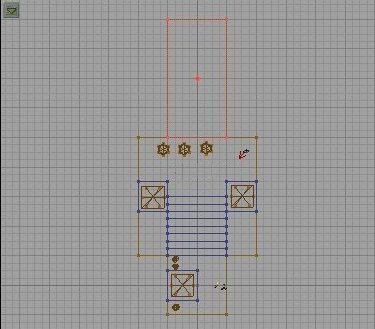
Subtract this room. Now, I will show you a short cut to retexture the walls. If you have been following along, then the entire hallway is textured like the floor/ceiling of the last room. If we hold ALT and Right-click the wall texture in the room with the barrels, this will load that texture. Now if we hold Alt and Left-click one of the walls in the hallway it will copy the wall texture we loaded to it. Change the wall texture of both long walls in the hallway. Now resize the red brush to 512 x 512 x 512 again. Move it like we did the hall remembering to raise it in the side view until the floors are even. Now subtract it.

The walls are the right texture but the floor/ceiling is off. So using the method we used to change the walls in the hall, change the floor and ceiling in the new room.
Tip: You can add actors to the level the same way we did decorations. Weapons and pickups don't have to be inside other objects (like barrels). Simply highlight them in the Browser, right click in the 3D window where you want to place them, and Add it there. You can reposition it after it's added if you need to, like we did before.Okay, this new room is going to be the home of a bad guy we get to fight! Now, we want the element of surprise on our baddie, so lets make a little alcove he will be in so we can get close to him without him seeing us. Resize the red brush to 512 x 256 x 256 and move it against the wall like this:
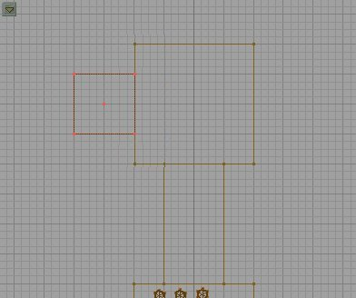
Subtract it and re-texture it. Now lets add the bad guy. In the Browser, make sure you are in Classes. Expand Pawn and then Scripted Pawn. These are all the creatures in Unreal. We hate the Skaarj so lets add one of those to fight. Expand Skaarj and you will see the two subclasses of Skaarj. Expand SkaarjTrooper. Highlight SkaarjGunner and add one to the alcove. He should be facing the right way but if he is not rotate him so that he is.
 |
Before we go on, we are going to need light in the new room so copy the brush to the Torch holder and add a couple more torches in the new room. I put mine on either side of the alcove like this: Now rebuild and run the level. Remember to get the ASMD and the ammo from the barrels before disturbing the Skaarj. Now go kill him! :) |
Well, chances are, the Skaarj killed you because he has an Eightball. See if you can figure out how to give the SkaarjTrooper an Automag instead! In case you didn't figure it out, do this: In the Browser, under Classes, under weapons, select the AutoMag. Now open The SkaarjGunner Properties and expand SkaarjTrooper. There is only one field here: WeaponType (I think we are on to something here :)). Click where it says Class'UnrealShare.Eightball' and then Clear. If you rebuilt now the Skaarj would have no weapon, but let's since we have AutoMag already selected give him that by clicking Use (just like we did when we added the pickups to the barrel). Now if you rebuild and run the map the skaarj will only have the AutoMag and when you kill him he will drop it and you can pick it up. Cool, huh?
You add all creatures (good and bad) the same way. Each has his own properties you can customize. The creature AI is pretty good in Unreal but that is beyond the parameters of this tutorial. For more info on creatures and getting them to do what you want read Steve Polge's article on the Unreal Tech Page.
Alright, let's play around with textures a little bit. First make another room out of a cube 512 x 512 x 512. Place it on the left side of the alcove where the Skaarj and line it up so the floor is even with the floor of the alcove. Go ahead and subtract it. Lets give this room a new texture. First, go to the Browser, select Texture mode and then load the Skaarj.utx texture set. Pick on e of the Wall textures and texture all the walls in the new room with it. Now from the Floors section select the last one "Xpth" and texture the floor and ceiling with it. Lets add another leg on this room. Press the Cube Icon and make the red brush 256 x 256 x 512 and then press build, then close the window. Align your red brush up with the floor of the last room and make it extend out like a hallway. Retexture the walls and floors just like the last room. Now left-click the hall we just added, and then right-click and Copy Polygons to brush like we did before. Make sure nothing is selected, and move the red brush so that it is at the end of the new hall at 90 degrees, making a "T" shape. Now you should notice that floor and ceiling textures of the last hall don't quite match with the new hall. It doesn't look too bad with this texture, but dammit, I want them to line up.
| The easiest way to align textures so that they all match is to align them all as either walls (for vertical surfaces) or floor/ceilings (for horizontal ones). To do this simply right-click the texture and from the pop-up menu choose align, and you will see your choices. You can select multiple textures as always before doing this and align them all at once. You can also do this by right-clicking, and opening the Surface Properties menu (more on that below). Align the floors and ceilings now. Once you have aligned the textures go ahead and add some lights to the parts we added. It's a good idea to make the light come from a light source. Look that Light textures and find one you like. Make brushes sized to match the texture. You can get the texture size by clicking the single texture button; the first one of these: |
 |
Take some time to experiment with the different Surface Properties. There are a lot of settings under Effects you should get familiar with. Try making one of the walls in the new hall a mirror (check mirror under effects). Try a texture that pans (check U-pan or V-pan). Make three lights (each one in the a different room) and texture it with one of the Light textures. Place a light about 32 units in front of each light. Leave one light texture "normal," set one to Unlit and one to Bright Corners. Note the differences of each.
There are lots of things I could walk you through in using the texture properties, but then I wouldn't have anything left to put in the forthcoming Texture Tutorial :)
For now, here are all of the Surface Property menus and a brief description of them.
 |
Most common settings are things like transparency, mirror, unlit (full bright), bright corners, panning, special lit. You can also set the texture panning in the Tool Bar. If you are not sure what each setting does, try it in a test map. Make sure real-time updating is set in the 3D window to view the effect. You must Rebuild to see the changes in the game. |
 |
These will rotate and flip the texture as indicated by the buttons. The Small and Big Diagonal will also scale the texture. |
| 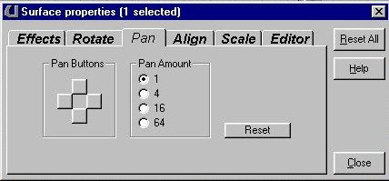 | This will pan (or move) the texture in the direction of the buttons. The numbers indicate how many units it will move the texture. |
 |
This will align the textures in the direction indicated by the button. For example, if you want all your floor or ceiling textures to align highlight them all and select Align As Floor/Ceiling.You can also align by highlighting the texture, right-clicking and using the pop-up menu. |
 |
This will scale or resize your textures. One is the standard size, 2 is the two times the standard, etc... |
 |
This will show/hide selected objects in the editor. I usually use the buttons on the Tool Bar. |
One more thing to know is that rooms don't have to be cubes. Try making rooms out of Cylinders or Cones. You resize them the same way we did with the cube, by right-clicking the icon and setting the size under it's properties window. Add a couple more rooms out of cylinders, or cubes or Cones, whatever you like. Take some time to experiment and play around with the different shapes.
This concludes the Basic tutorial. You should be able to build rooms, texture them, add lights, add actors etc... just enough to get you started. Play around and get familiar with interface and then move on to the advanced tutorials.
Note: There are several things we just "glossed over" in this tutorial. This tutorial is just to get you familiar with UnrealEd and to learn the very basics of level design. Subsequent tutorials will go more in depth on specific functions and tools of the editor.